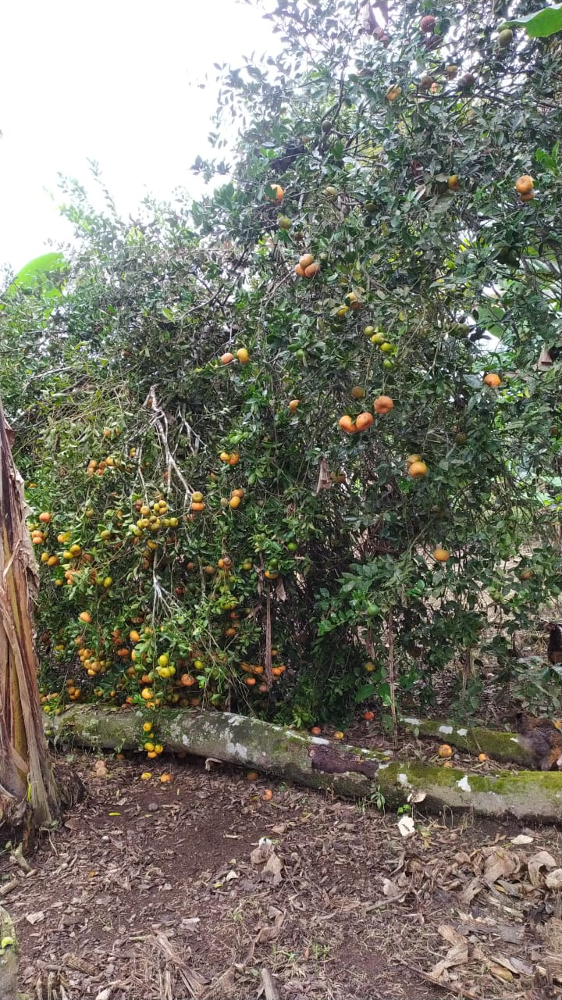

Fruta cítrica, la pulpa contiene vitamina C, vitamina B, ácido cítrico, azúcar reductora y caroteno, aunque no en grandes cantidades. Su piel tiene aceite volátil y glucósido y sus semillas, aceites grasos, proteínas y sustancias amargas. Tiene propiedades broncodilatadoras y antinflamatorias adecuada en el tratamiento de úlceras, ayuda el intestino y la digestión.
La naranja destaca por ser una excelente fuente de vitamina C, flavonoides, ácido fólico y minerales como el potasio y magnesio.
La naranja es un poderoso antioxidante por la gran cantidad de Vitamina C que contiene, por ello favorece la cicatrización, y refuerza es sistema inmunológico de organismo. También contiene calcio, magnesio, beta caroteno, ácido fólico, fósforo, potasio, cobre, zinc, ácidos málico, oxálico, tartárico y cítrico.
La papaya contiene una enzima llamada papaína que ayuda a la digestión; de hecho, se puede utilizar como ablandador de carne. Además, tiene un alto contenido de fibra y agua, que ayudan a prevenir el estreñimiento y promueven la regularidad y la salud del tracto digestivo Su aporte en papaína y vitamina A ayuda a eliminar las células muertas de la piel además de descomponer aquellas proteínas inactivas. Al ser baja en sodio, es perfecta también al retener poca agua y favorecer así a la hidratación.
Esta bebida, que se obtiene al tostar y moler los granos del fruto del cafeto o planta del café, es bastante estimulante debido a su contenido en cafeína, una sustancia psicoactiva. Este producto es una de las bebidas no alcohólicas más sociales en el mundo. A las vitaminas y minerales que contiene una taza de café se agrega una importante carga de antioxidantes, especialmente polifenoles, los antioxidantes son necesarios para combatir el ataque de los radicales libres, retrasando el proceso natural de envejecimiento y previniendo enfermedades La cafeína aumenta los niveles de adrenalina de nuestro cuerpo. Esta sustancia prepara al organismo para asumir un esfuerzo físico, por eso muchos atletas sienten cómo el café beneficia a su organismo.
La yuca es el tubérculo más utilizado en la cocina está presente en los platos más populares se trata de una fuente de energía y nutrientes.
El cacao es rico en polifenoles, catequinas, antocianinas y proantocianidinas, que tienen propiedades antioxidantes y pueden influir directamente en la resistencia a la insulina y a su vez reducir el riesgo de diabetes. Por otro lado, tienen propiedades antiinflamatorias, que resultan en efectos cardioprotectores.
todo los derechos reservados en 2021 ©